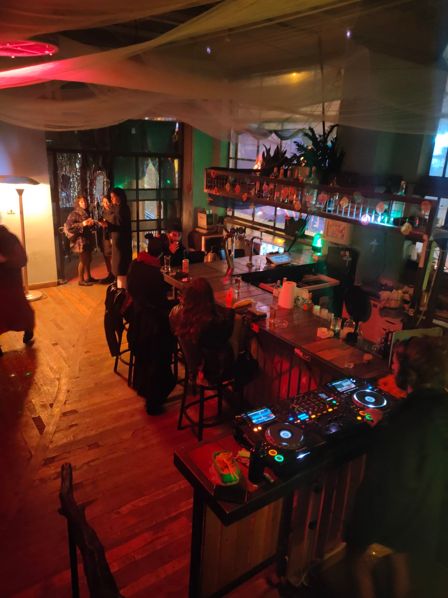
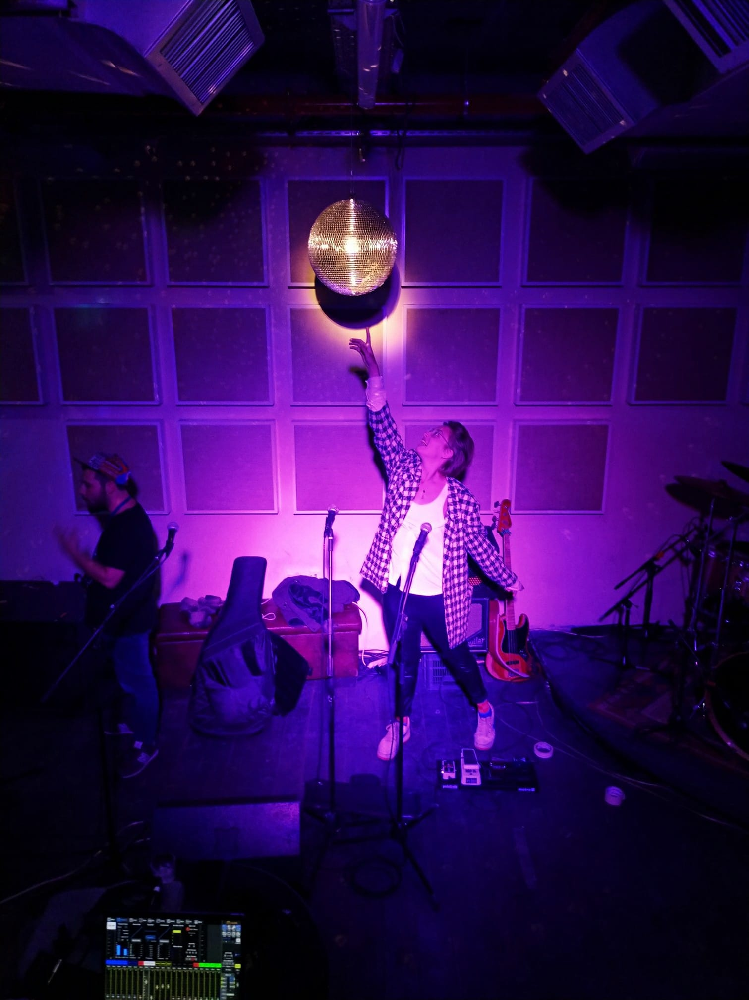

פונדק
מקום

הפונדק היה מרכז תרבות אלטרנטיבי, שהוקם ב־2018 על ידי עומרי (דה לה) רותם במטרה להיות שילוב של הוסטל ומועדון תרבות רב שימושי. ההשראה הגיעה מחוויות שעומרי חווה כשחי בסקוואטים באירופה, לדוגמה במפעל נטוש בלייפציג, בהם הוקמו מרכזי פעילות של תרבות נגד בכל תחומי האמנות והתרבות ואף בתחומים פוליטיים. כשחזר לירושלים והרגיש שיש צורך במקום כזה, חשב על כיוון של הוסטל מכיוון שראה שיש חוסר בהוסטלים עם אווירה מקומית ואותנטית – הוא הרגיש שמקומות כדוגמת האברהם הוסטל לא מרגישים ירושלמיים, ולא מנכיחים את החוויה של להיות תייר בירושלים, ולכן רצה לייצר מקום קטן עם אופי מקומי.
היה ברור שאי אפשר להקים בירושלים סקוואט באותו אופן שהדבר קיים בחו"ל, מנותק לחלוטין ממימון ומהעירייה; הרעיון היה שההוסטל יחליף את הפטרונות של העירייה ויאפשר לקיים במקום פעילות באופן חופשי. המקום הוקם כעסק כדי שלא יווצר מצב שלא ניתן להעביר ביקורת על הגוף שנותן את הכסף, על החברה או על המצב שקיים, כפי שקורה רבות בירושלים שבה יש סינון וסירוס של האמנות, ונוצרת אמנות שהיא קישוטים בעיר של כיבוש.
המבנה היה בעבר בנק, ובמרתף הייתה כספת שהפכה למרחב רב תחומי לפעילויות ואירועים. התברר שההוסטל, שהיה בעל 50 מיטות, מצליח פחות מהפעילות התרבותית במקום, ובמיוחד פחות מסופי השבוע, בהן הפך המקום למועדון. החזית נהייתה המועדון, ובמסגרתו התקיימה פעילות רבה. בימי ראשון היה בית ספר רוק לנוער בסיכון, בימי שני פרוייקט הידברות ישראלי פלסטיני דרך ריקוד, בשלישי היו חוגים לפילוסופיה וערבי משוררים. כל אדם כמעט שבא עם רעיון קיבל תמיכה ותשתית מהפונדק, ברוב השבוע היה בית קהילתי ובו אנשים שונים ניסו ליצור דברים ופרוייקטים למען הקהילה. בימי חמישי ושישי היה הזמן של להכניס כסף על ידי מכירת כרטיסים ואלכוהול.

החלל המרכזי בקומה העליונה של הפונדק

בגלל הפתיחות הרבה והקהילתיות של המקום נוצרו בו דברים ואירועים מגוונים עד קיצוניים, "מופרעים ויפים" כדברי עומרי. למשל, היה עיבוד לשייקספיר "שייקספיר על קטמין", שבו קעקעו על השחקנית הראשית את הטקסט שהיא מקריאה; יום בנושא כסף – עם קזינו, אוכל ללא הגבלה שניתן בתנאי ששורפים שטר, מקדש של כסף שמקבלים כסף אם מתפללים בו. בכניסה במקום תו ירוק (תקופת הקורונה) היה צריך להראות עובר ושב בחשבון הבנק. זה היה אירוע לא רווחי אבל זו לא הייתה המטרה; רייב ששודר בלייב סטרים למערה של מורדים כורדים, בשלב מסוים היו 16 אלף צופים, חלקם מכורדיסטן; ג'אם מוזיקלי עם נגני כלי נשיפה מעזה בסטרים; ערב חטאים ביום כיפור; זום עם אלחנדרו חודורובסקי (במאי, אמן ומיסטיקן) כדי לדבר על הצלתה הפסיכו-מאגית של ישראל.
מלבד האירועים הצבעוניים על גבול ההזויים שהתארחו שם, המסיבות בימי חמישי הצליחו מאוד, בזכות ניהול אמנותי מוקפד וניסיון לקדם מוזיקה כיפית ומקבלת פנים, כדי שלאנשים יהיה כיף לבוא ושירגישו רצויים, ניסיון לייצר תרבות בילוי שלא חייבים להיות מגניבים כדי להנות בלילה. בין השאר התקיימו שם הופעות של אינגה דינגו והופעות מטאל; מסיבות של היפנוטיק דיסקוטק, פאקוטק ורעש רקורדס, ושל פשטוטה, חבורה שעשתה מסיבות של מוזיקת UK ובייס. הייתה אף מסיבת גיוס כסף לצעדת פורים של המפעל (צעדת הפיראטים) שהצליחה לגייס סכום גדול.
הפונדק נסגר במאי 2022 מסיבות כלכליות ומנהלתיות.